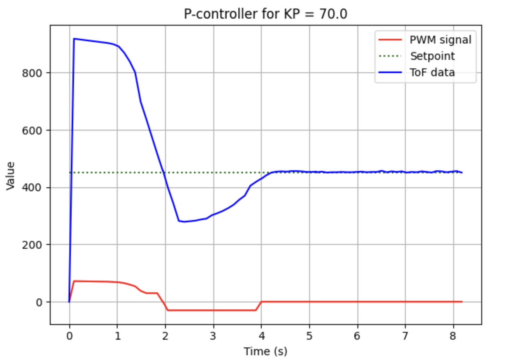
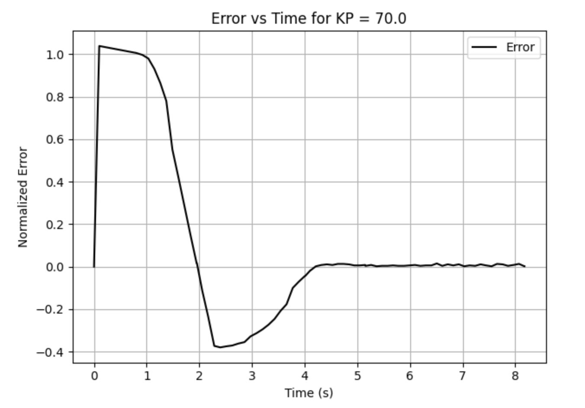

Prelab
Bluetooth Communication Architecture
The primary objective of my prelab was to make a clean communication structure between the Artemis and the host computer so that control commands and logged sensor data could be exchanged reliably over Bluetooth. Commands were sent from Python to the Artemis in compact delimited formats, while the robot returned logged sensor and controller data after each run. This was especially important for closed-loop control because the controller gains, setpoint, ToF measurements, estimated error, and motor input all needed to be recorded and visualized after each test.
On the embedded side, the BLE command parser was configured to read input values using the RobotCommand class. This made it possible to send structured commands such as controller gains and setpoints using a single characteristic write. This greatly simplified test iteration during the hueristic testing stage.On the Python side, notification handlers were written to receive, parse, and store returned values in arrays for plotting and later saving my final tests for future use during lab 7. This communication structure formed the basis of the P, PD, and PID controller experiments described later on this page.
PID Data Send Loop
I wrote the following loop in the PID function of my arduino code to send over Bluetooth at the end of each PID test run.
for (int i = 0; i < pid_log_count; i++) {
tx_estring_value.clear();
tx_estring_value.append("PID:");
tx_estring_value.append(pid_time_ms_array[i]);
tx_estring_value.append(",");
tx_estring_value.append(pid_setpoint_array[i]);
tx_estring_value.append(",");
tx_estring_value.append(pid_error_array[i]);
tx_estring_value.append(",");
tx_estring_value.append(pid_pwm_array[i]);
tx_estring_value.append(",");
tx_estring_value.append(pid_tof_array[i]);
tx_estring_value.append(",");
tx_estring_value.append(kp);
tx_estring_value.append(",");
tx_estring_value.append(kd);
tx_estring_value.append(",");
tx_estring_value.append(ki);
tx_characteristic_string.writeValue(tx_estring_value.c_str());
delay(10);
}
Drive Code Redo
To simplify the main BLE Arduino file, I moved the core motion functions into a separate car.h class. This allowed the main control file to call higher-level functions such as car.fwd(), car.back(), and the turning methods without repeating low-level motor driver code in each command case. This made the motion control portion of the lab substantially cleaner and easier to debug while integrating feedback control.
Lab Tasks
Range and Sampling Time Discussion
The front ToF sensor sampled at approximately 10 Hz during controller operation, and the PID loop was able to work significantly faster though at almost 100Hz. I did this by replecating the code from my COLLECT_TOF_CONT case, which allowed for continual collection of data using an if statement. This sampling rate was fast enough to support distance regulation for the speeds used in this lab, but still coarse enough that some care had to be taken when computing derivative action and when extrapolating between valid ToF measurements. Because the sensor did not update on every loop iteration, I added extrapolation logic to continue estimating the current state between real ToF updates using previously logged values of error.
This sampling limitation influenced controller design directly. A proportional controller remained quite manageable at 10 Hz, but the derivative term required more care because differencing early samples or differencing over very small effective intervals could produce a large transient spike. This issue became especially noticeable between the first and second polls of a run when the extrapolation calculated a zero derivative.
Controller Logging Strategy
For each controller run, I initialized global arrays to record time, setpoint, error, PWM command, and ToF values. When the run ended, a loop iterated through those arrays and transmitted the stored data back to the computer over BLE. This approach kept the controller self-contained on the robot during runtime while still producing complete logs for analysis afterward. I also added a bit of logic which allowed for an external bluetooth command STOP_PID to end the while loop and start the sending of data. This made it possible for me to let the robot rest then to disturb it and observe the response. Some of the setup code and the case I used in arduino are below.
while (pid_active && !pid_stop_requested) {
BLE.poll();
if (rx_characteristic_string.written()) {
robot_cmd.set_cmd_string(rx_characteristic_string.value(),
rx_characteristic_string.valueLength());
int inner_cmd = -1;
if (robot_cmd.get_command_type(inner_cmd)) {
if (inner_cmd == STOP_PID) {
pid_stop_requested = true;
pid_active = false;
car.kill();
break;
}
}
}
}
case STOP_PID: {
pid_stop_requested = true;
pid_active = false;
car.kill();
Serial.println("STOP_PID received");
break;
}
P / I / D Controller Design
Initial Proportional Controller
I began with a proportional-only controller. My initial proportional gain estimate was chosen from the desired relationship between a proportional error of 1, proportional error = (tof reading - setpoint)/setpoint, and commanded PWM. Specifically, I wanted a proportional error of approximately 1 to correspond to a motor input near 75 PWM, so I used an initial guess of KP = 75. For initial safety testing on the physical robot, I reduced this slightly to KP = 70. The proportional controller multiplied the normalized error by the gain and then converted the result to a commanded PWM input. Positive error produced a forward command, while negative error caused the robot to back up.
I also bounded the controller output with practical motor-drive limits. For large errors, I capped the PWM at 90 so that the robot would not accelerate aggressively into a wall. For moderate errors, I imposed a minimum command around 35 PWM whenever the error too small, since values below that range were typically insufficient to overcome friction and move the chassis. This produced a controllable and physically safe first implementation. The code for which is below.
float control = kp * abs_error;
int pwm_val = (int)control;
if (abs_error > 1.5f) {
pwm_val = 80;
} else {
if (pwm_val > 80) pwm_val = 80;
if (pwm_val < 35 && abs_error > 0.05f) pwm_val = 35;
if (abs_error < 0.05f) pwm_val = 0;
}
if (pwm_val == 0) {
car.kill();
signed_pwm = 0;
} else if (error > 0.0f) {
car.fwd(control_step_ms, pwm_val);
signed_pwm = pwm_val;
} else {
car.back(control_step_ms, pwm_val);
signed_pwm = -pwm_val;
}
Proportional Control Video
Below is a proportional control demonstration. This was the first controller that was verified to work reliably on the robot.
Derivative Term and PD Testing
After validating proportional control, I extended the controller to include derivative action primarily to confirm that the derivative term was behaving as expected. The derivative component contributes control effort in response to the rate of change of error, so it is most useful during transient response and when responding to purturbations. In practice, I also implemented extrapolation between valid ToF readings by using the difference in time and the recent change in response to estimate how the error was changing between tof readings. This improved responsiveness when the sensor had not yet produced a fresh reading.
Integral Term and Final PID Controller
I then implemented a PID controller. The integral term accumulates error over time and multiplies that accumulated value by KI, which helps eliminate steady state offset by centering the response on the desired setpoint. I tuned the final controller using heuristic method 2 discussed in class. The final gain set that produced the best overall behavior was:
- KP = 70
- KD = 0.02
- KI = 2
These values provided a reasonable balance between responsiveness and settling. The proportional term produced the primary control response, the derivative term damped transient response, and the integral term reduced steady-state error. My implementation at this stage did not include explicit windup protection for integral accumulation, but it was sufficient to demonstrate the use of the full PID controller on my robot.
Representative Code
Bluetooth-Based PID Command Structure
The PID controller was implemented as a Bluetooth command case that accepted a setpoint and controller gains from Python. The loop remained active until a separate stop command was received, allowing me to perturb the robot during a run and observe whether the controller would recover after the initial transient.
int now_ms = millis();
float dt_control = (now_ms - last_control_ms) / 1000.0f;
float error = pid_last_error;
float derivative = 0.0f;
int signed_pwm = pid_last_pwm;
int tof_value = pid_last_tof;
// ToF update
if (tof1.checkForDataReady()) {
int distance = tof1.getDistance();
tof1.clearInterrupt();
tof_value = distance;
error = ((float)distance - (float)setpoint) / (float)setpoint;
if (pid_log_count >= 1) {
float last_error = pid_error_array[pid_log_count - 1];
derivative = (error - last_error) / dt_control;
}
} // get error values to predict new error
else {
if (pid_log_count >= 2) {
float last_error = pid_error_array[pid_log_count - 1];
float prev_error = pid_error_array[pid_log_count - 2];
int last_time = pid_time_ms_array[pid_log_count - 1];
int prev_time = pid_time_ms_array[pid_log_count - 2];
float dt_err = (last_time - prev_time) / 1000.0f;
if (dt_err > 0.0f) {
float error_rate = (last_error - prev_error) / dt_err;
float dt_since_last = (now_ms - last_time) / 1000.0f;
error = last_error + error_rate * dt_since_last;
derivative = error_rate;
tof_value = pid_tof_array[pid_log_count - 1];
}
}
}
integral_error += error * dt_control;
float abs_error = fabs(error);
float abs_derivative = fabs(derivative);
float control = kp * abs_error + kd * abs_derivative + ki * fabs(integral_error);
int pwm_val = (int)control;
Results
ToF vs Time and Motor Input vs Time
The graph below shows the measured ToF response and commanded motor input over time. This plot was the primary diagnostic tool used during controller tuning. It allowed me to compare the measured distance against the setpoint while also seeing how aggressively the controller was commanding the motors and how much it was causing overshoot.

Error vs Time
The error-time plot was especially useful for determining whether the response was converging smoothly or oscillating around the target. In the proportional-only case, the error decreased but did not reject steady-state offset as effectively. The integral term improved this substantially by accumulating the remaining bias over time.

Controller Performance Video
The video below shows the final controller behavior. Although the associated graph from this run is labeled as a P-controller in my local plotting script, the final tuned run shown here used the full PID controller with the gains reported above.
References
For this lab I worked with Coby Lai. I also referenced the student page Aidan Derocher while comparing implementation approaches. In addition, I used AI assistance to check syntax, review controller logic, and debug portions of the Bluetooth and embedded control code.